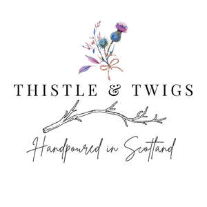

Trade Mark Journal No.2025/028 11 July 2025
UK00004225930 27 June 2025 (3,4,5,21,35)

- Class 3
- Air fragrance reed diffusers; Massage oils and lotions; Lotions for beards; Soaps; Soap; Perfumed soap; Shower soap; Bath soap; Hand soaps; Bar soap; Toilet soap; Facial soaps; Skin soap; Bath soaps; Aloe soap; Aloe soaps; Liquid soaps; Liquid soap; Perfumed soaps; Hand soap; Waterless soap; Scented soaps; Soap products; Non-medicated soaps; Soap; Body cream soap; Cakes of soap; Soaps and gels; Liquid bath soaps; Liquid bath soap; Bars of soap; Soaps for personal use; Cakes of toilet soap; Soaps in liquid form; Soaps for body care; Liquid soaps for hands and face; Cakes of soap for body washing; Cuticle oil; Bath oils; Perfume oils; Essential oils; Lavender oil; Cuticle oils; Scented oils; Aromatherapy oil; Bath oil; Hair oils; Cosmetic oils; Massage oils; Massage oil; Aromatic oils; Aromatherapy oils; Facial oils; Bath bombs; Bath crystals; Bath preparations; Bubble baths; Foam bath; Bath milk; Bath pearls; Bath gels; Bubble bath; Bath foam; Bath flakes; Bath cream; Bath gel; Bath foams; Bath beads; Bath creams; Bath salts; Foaming bath liquids; Foaming bath gels; Foam bath preparations; Scented bathing salts; Room perfume sprays; Scented room sprays; Room scenting sprays; Room perfumes in spray form; Room fragrances; Room fragrancing products; Room fragrancing preparations; Scented linen sprays; Body oil spray; Scented fabric refresher sprays; Massage candles for cosmetic purposes; Massage waxes; Body massage oils; Facial massage oils; Massage oils, not medicated; Massage creams, not medicated; Non-medicated massage preparations ; Skin fresheners; Essential oils for use in air fresheners; Carpet freshening preparations; Skin cleaning and freshening sprays; Reed diffusers; Refill packs for cosmetics dispensers; Refill packs for shampoo dispensers; Refill packs for hand soap dispensers; Refills for electric room fragrance dispensers ; Refill packs for shower gel dispensers; Refill packs for skin care cream dispensers; Refill packs for body cleansing product dispensers; Fragrance refills for non-electric room fragrance dispensers; Scented linen water; Makeup setting sprays; Scented body spray; Sachets for perfuming linen; Linen (Sachets for perfuming -); Body sprays [non-medicated]; Scents; Scented sachets; Scented water; Scented pine cones; Scented wood; Scented toilet waters; Scented fabric refresher spray; Scented ceramic stones; Scented wax melts; Oils for perfumes and scents; Scented oils used to produce aromas when heated; Essential oils for use in the manufacture of scented products; Bath powder; Bath herbs; Bubble bath preparations; Baby bubble bath; Cosmetic bath salts; Fragrances; Fragrance sachets; Potpourris [fragrances]; Household fragrances; Fragrance emitting wicks for room fragrance; Air fragrance preparations; Aromatics for fragrances; Fragrance preparations; Fragrances for automobiles; Cleaning and fragrancing preparations; Air fragrancing preparations; Fragrances for personal use; Fragrance for household purposes; Fragrance sachets for eye pillows; Handmade soap; shea butter creams; eau de Cologne; Hand washes; Hand soap; Hand cleansers; Hand cleaner; Hand soaps; Hand lotions; Hand cream; Hand creams; Natural oils for perfumes; Essential oils for aromatherapy; Perfumery and fragrances.
- Class 4
- Wax for making candles; Candles; Perfumed candles; Floating candles; Candle torches; Candle assemblies; Church candles; Tealight candles; Scented candles; Fragranced candles; Candles (Perfumed -); Table candles; Soy candles; Fruit candles; Nightlights [candles]; Candle wax; Votive candles; Candles and wicks for candles for lighting; Wicks for candles; Aromatherapy fragrance candles; Tea light candles; Special occasion candles; Musk scented candles; Candles in tins; Candles for lighting; Candles containing insect repellent; Candles for night lights; Wicks for candles for lighting; Candles and wicks for lighting; Tealights; Candles for use as nightlights.
- Class 5
- Antibacterial hand lotions; Massage candles for therapeutic purposes; Car air freshener; Car air fresheners; Air fresheners; Air freshener sprays; Air freshener refills; Air-freshening preparations; Car deodorants; Anti-insect spray; Anti-insect sprays; Deodorising room sprays; Deodorizing room sprays; Medicated massage candles.
- Class 21
- Aromatic oil diffusers, other than reed diffusers; Aromatic oil diffusers, other than reed diffusers, electric and non-electric; Candle rings; Candle sticks; Candle holders; Candle extinguishers; Candle snuffers; Pillar candle plates; Candle drip rings; Candle jars [holders]; Glass holders for candles; Candle holders of wrought iron; Candle extinguishers, not of precious metal; Candle warmers, electric and non-electric; Candle holders not of precious metal; Candle rings, not of precious metal; Tealight holders; Tealight burners; Soap holders; Hand soap holders; Shaving brush holders; Liquid soap holders; Non-electric wall sconces [candle holders]; Candle snuffers, not of precious metal; Plates for diffusing aromatic oil; Scent sprays [atomizers]; Apothecary jars; Glass storage jars; Jars for household use; Bath brushes; Bath sponges; Air fragrancing apparatus; Crystal ornaments; China ornaments; Ornamental glass; Glass ornaments; Ornamental glass spheres; Ornaments made of china; Ornaments made of crystal; Ornaments made of glass; Ornaments made of porcelain; Ornaments made of ceramics; Ornaments [statues] made of china; Ornamental figurines made of glass; Ornamental figurines made of porcelain; Ornamental figurines made of china; Decorative objects [ornaments] made of glass.
- Class 35
- Retail and wholesale services in connection with the sale of reed diffusers, air fragrance reed diffusers, fragrances, fragrances for automobiles, fragrances for personal use, household fragrances, room fragrances, cosmetics, toiletries, soaps, hand and body lotions and creams, hand wash, lip balms, perfumery, hair lotions, shampoo and conditioner, hair care products, essential oils, shower and bath preparations, shower and bath gels, bath foams, bath oils, bubble baths, bath salts, skincare preparations, skincare cosmetics, skin moisturisers, skin cleansers, skin toners, skin lotions, skin care exfoliants, skin care masks, deodorants, antiperspirants, shaving preparations, shaving creams, foams, lotions and gels, after-shave preparations, beard oil, candles, candlesticks, candles and wicks for lighting, scented candles, tallow candles, aromatherapy fragrance candles, beeswax for use in the manufacture of candles, candles for absorbing smoke, candles in tins, church candles, floating candles, fruit candles, special occasion candles, table candles, candles containing insect repellent, candles for use as nightlights, candles for use in the decoration of cakes, Christmas lights [candles], Christmas tree decorations for illumination [candles], Christmas tree ornaments for illumination [candles], Fragranced candles; marketing, advertising and publicity services; provision of on-line advertising space; operation and management of gift card, discount card and customer loyalty schemes.
Sukanya Borah